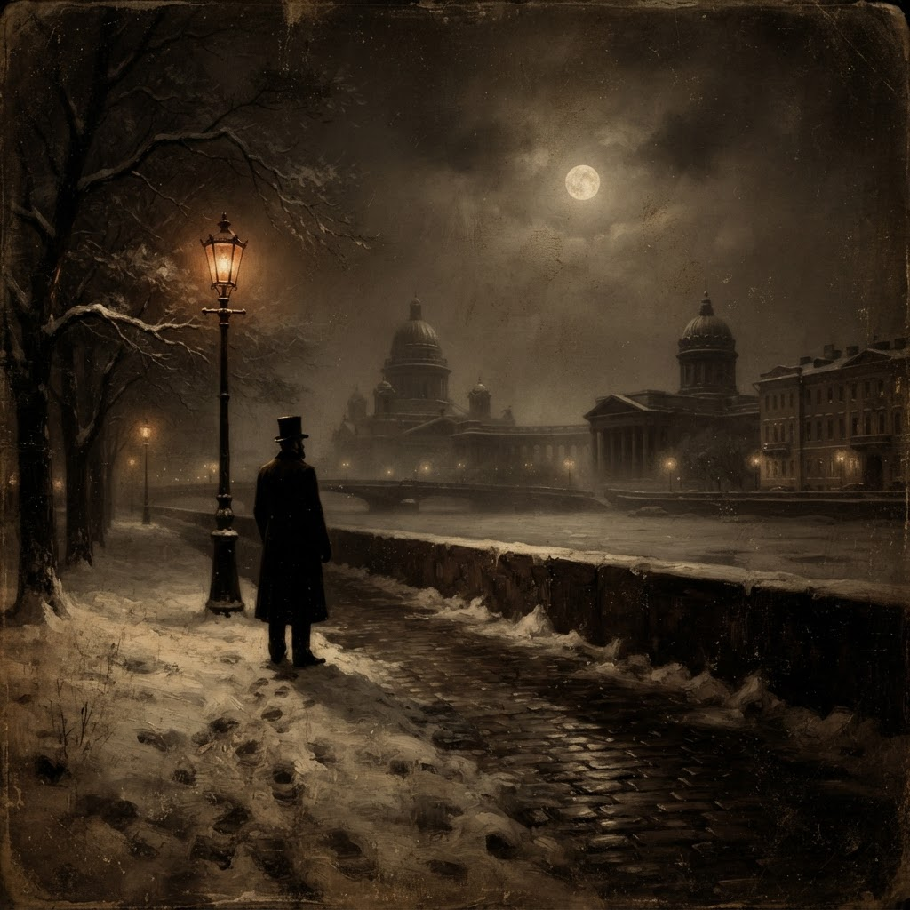
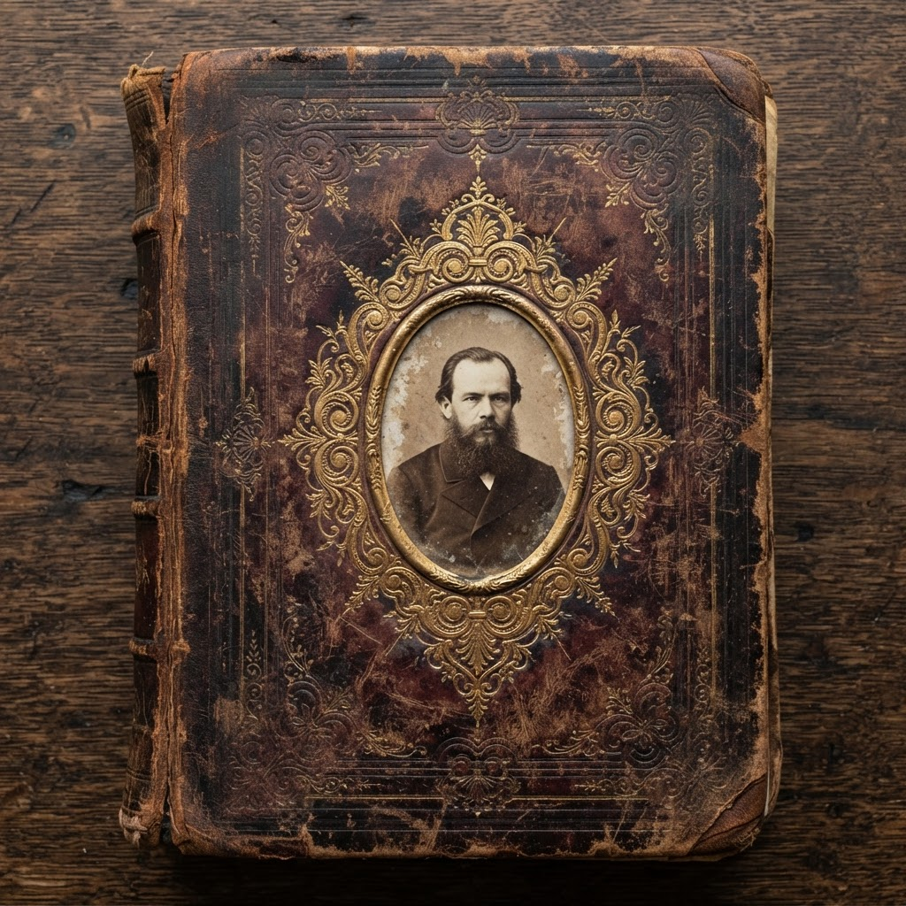
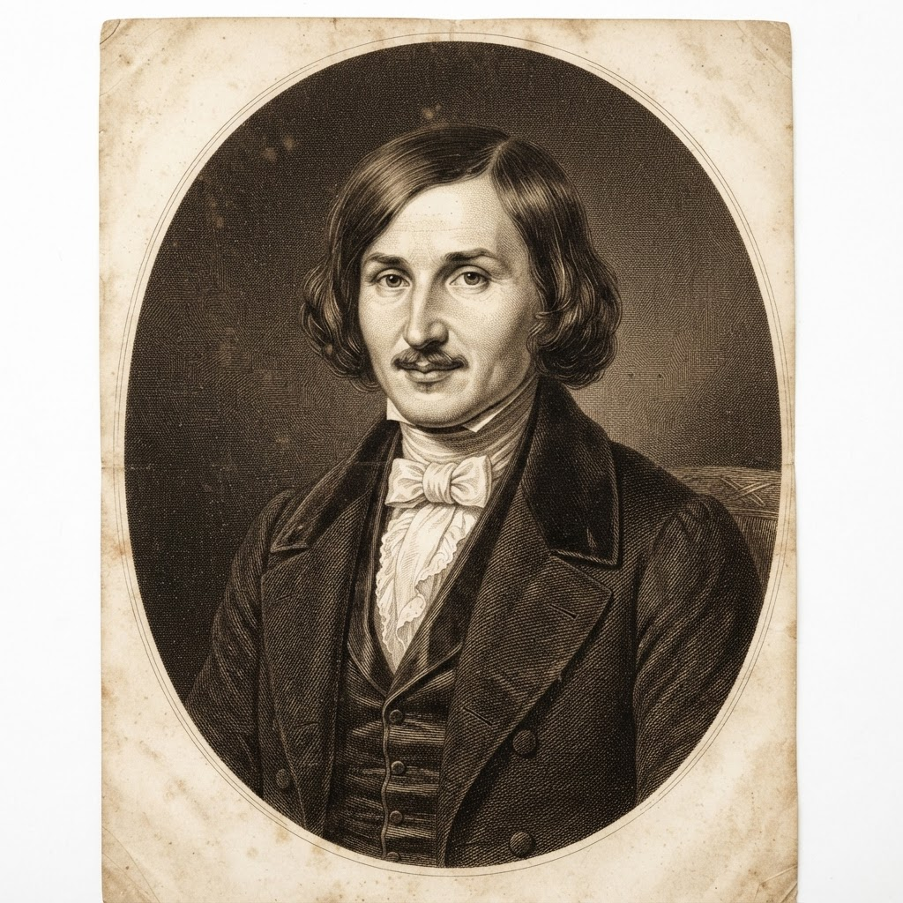

Gogol'unPaltosu
Nikolay Gogol
Neden Okumalısınız?
Gogol'un Paltosu, yalnızca bir kısa öykü değil; sosyal eleştiri, konunun kurgusu ve bürokrasinin insan onuru üzerindeki baskısını bir arada barındırır.
Gogol'un yalın diliyle küçük memurun trajedisini, bürokrasinin acımasızlığını ve katmanlı insan duygularını keşfedersiniz.
Benzer Öneriler

Dostoyevski
Yeraltından Notlar
Detayları GörKafka
Dönüşüm
Detayları GörPuşkin
Maça Kızı
Detayları Gör
Gogol Hakkında

1809'da doğan Nikolay Gogol, Rus edebiyatının en özgün ve etkili yazarlarından biridir. Gerçekçiliği grotesk ve ironiyle harmanlayan üslubu, modern edebiyata yön verdi.